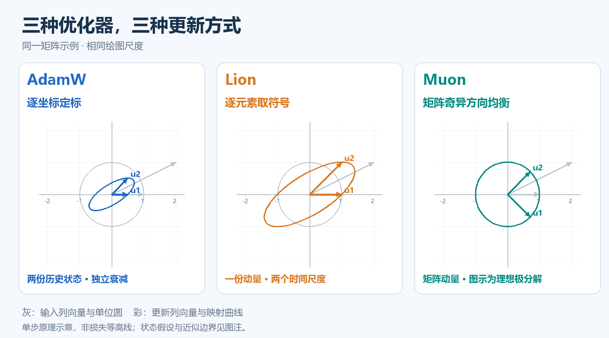
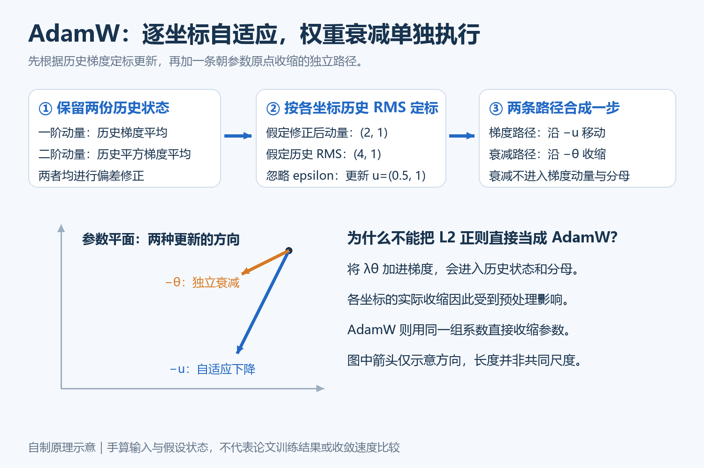
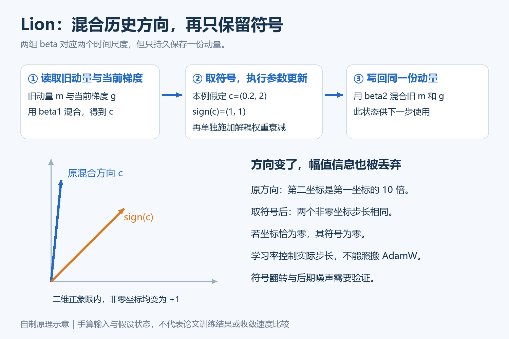
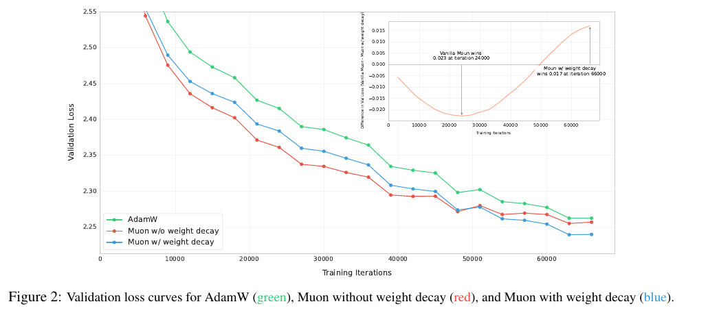
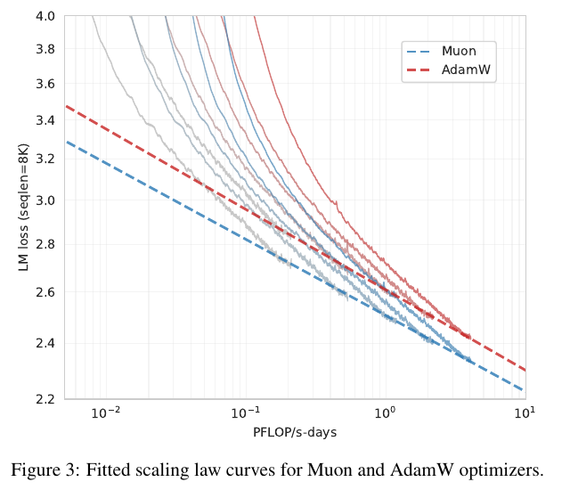

PAPER RESEARCH / 2026-11-24
从 AdamW 换到 Lion 或 Muon，能省下什么？
日期：2026-11-24 ｜ AI ｜ 论文精读与方法分析
换个优化器，训练会有什么变化？
想省显存，还是想用更少算力达到同样的训练损失？这两个目标，对应的选型可能不同。
AdamW 按历史梯度调整各坐标的步长，并独立衰减权重。Lion 用符号决定更新方向，只存一份动量。Muon 按矩阵结构调整更新，在一些语言模型预训练实验中降低了计算量，微调时收益则不稳定。

1. 问题建模与共同的演变起点
训练目标为 \(\min_\theta F(\theta)=\mathbb E_{z\sim\mathcal D}[\ell(\theta;z)]\)。参数 \(\theta\in\mathbb R^P\)，小批量梯度为 \(g_t\)，其方向受采样噪声影响。优化器把当前梯度、历史状态和超参数变为更新 \(u_t\)。本文统一采用
\(\eta_t\) 为学习率，\(\lambda\) 为解耦衰减系数。对不使用衰减的参数组令 \(\lambda=0\)。同一个学习率数值只有在更新尺度接近时才具有可比性。
| 阶段 | 主要问题 | 使用的信息 | 后续限制 |
|---|---|---|---|
| SGD | 用小批量梯度下降 | 当前梯度 | 噪声、病态曲率和步长选择 |
| Momentum | 平滑时间方向，积累持续梯度 | 一份指数动量 | 各坐标尺度仍可不同 |
| AdaGrad / RMSProp | 按坐标调整步长 | 平方梯度累计或滑动平均 | 对角统计未表示跨坐标关系 |
| Adam | 合并动量与自适应缩放 | 一阶和二阶原点矩 | 两份状态，正则项会进入预处理 |
| AdamW | 解耦参数收缩和损失更新 | Adam 状态及独立衰减 | 仍为逐坐标预处理 |
| Lion | 降低状态与幅度处理成本 | 一份动量，两个混合系数 | 符号操作丢弃幅度，需调步长 |
| Muon | 利用权重的矩阵结构 | 矩阵动量及近似极分解 | 额外矩阵运算、参数分组与尺度约定 |
Momentum 可写为 \(m_t=\beta m_{t-1}+(1-\beta)g_t\)。Adam 在此基础上估计 \(g_t^2\) 的移动平均。这里的二阶矩是平方梯度统计，和 Hessian 的二阶导数属于不同对象。Muon 也不显式计算 Hessian。上述分类按实现使用的信息组织。Adam 原文
2. AdamW：将权重衰减移出自适应梯度
Ilya Loshchilov 与 Frank Hutter 的论文署名机构为弗赖堡大学，研究从优化及超参数选择出发，检验 Adam 的泛化差距有多少与正则化实现有关。论文发表于 ICLR 2019，本文使用 arXiv:1711.05101v3。核心贡献是解耦权重衰减。原始论文
2.1 Adam 与 AdamW 的区别在权重衰减的位置
Adam 用梯度的一阶、二阶移动平均决定每个参数的更新。AdamW 沿用这套自适应更新，并给权重增加一条独立的收缩路径。衰减系数设为零时，在其他设置相同的条件下，两者的更新相同。容易混淆的是 Adam 加 L2 正则：它把正则项的梯度与任务梯度相加，再把和送进 Adam。
设 \(g_t\) 是当前任务损失的梯度，\(u_t\) 是根据 Adam 的两份历史状态算出的自适应更新量。三种写法的差别如下：
| 方法 | 用什么更新一阶、二阶状态 | 参数如何更新 |
|---|---|---|
| Adam（无正则） | \(g_t\) | 减去 \(\eta_t u_t\) |
| Adam 加 L2 正则 | \(g_t+\lambda\theta_t\) | 减去 \(\eta_t u_t\)。这里的 \(u_t\) 已包含正则梯度的影响 |
| AdamW | \(g_t\) | 将原权重乘以 \(1-\eta_t\lambda\)，再减去 \(\eta_t u_t\) |
两步手算。 假设参数初值为 2，前两步任务梯度都为零、历史状态从零开始，学习率为 0.1，衰减系数为 0.1。无正则的 Adam 两步都停在 2。AdamW 每步将权重乘以 0.99，轨迹为 2 → 1.98 → 1.9602，一阶、二阶状态始终为零。Adam 加 L2 的首步输入梯度为 0.2，偏差修正后的一阶动量为 0.2、二阶状态为 0.04，忽略很小的 \(\epsilon\) 时归一化更新量为 1，首步走到 1.9。第二步的输入梯度为 0.19，上一轮的 0.2 仍参与两份历史状态的计算。这个例子说明，同样写 0.1，L2 系数和 AdamW 衰减系数的实际作用不同。
对普通 SGD，L2 正则产生的更新可以直接改写成乘法衰减：
对 Adam，正则梯度参与一阶平均，也进入平方梯度的二阶平均，因此会同时改变更新的分子、分母和后续历史状态。AdamW 的收缩则直接作用于权重。上述区分对应原论文的 Algorithm 2。AdamW 原论文
2.2 完整更新链
以下按原文 Algorithm 2 整理，采用常见的学习率乘衰减系数约定。
梯度经过时间平滑后，用逐坐标 RMS 统计缩放。偏差修正补偿的是历史状态从零开始带来的初期偏小。 例如第一步梯度为 2，一阶系数为 0.9，二阶系数为 0.999。从零初始化时，一阶状态只收到 \(0.1\times2=0.2\)，二阶状态只收到 \(0.001\times2^2=0.004\)。分别除以 0.1 和 0.001，就得到修正后的一阶估计 2、二阶估计 4。步数增加后，分母逐渐接近 1，修正作用随之变小。Adam 和 AdamW 都做这项修正。AdamW 相比 Adam 的改动是把权重衰减单独施加到参数上。\(\epsilon\) 控制分母接近零时的数值行为。所有平方、开方、除法都逐元素执行。原文调度中的衰减记法和库函数参数可能不同，迁移时需核对实际每步收缩因子。

2.3 证据与优缺点
原文使用 CIFAR-10、ImageNet-32×32 等图像分类配置，比较 Adam、AdamW 和动量 SGD，并扫描学习率和衰减。报告中的泛化改善属于这些数据和模型的对照结果。其理论分析解释了两种正则方式的不同，并不推出所有任务上 AdamW 均优于其他方法。
优势包括逐坐标尺度适应、清晰的乘法衰减和较简单的参数类型覆盖。代价包括两份持久状态、参数级读写，以及对角统计对矩阵方向关联的表达限制。独立施加衰减改善了调参解释性，训练结果仍取决于学习率、衰减、调度、批量和参数组。
3. Lion：符号更新与双时间尺度动量
Xiangning Chen 等的论文来自 Google 及 UCLA 相关团队。算法通过程序搜索、跨规模筛选和简化得到。研究发现过程包含低成本代理任务、逐级扩大任务的 funnel selection，以及排除只在代理任务有效的程序。优化器的有效性需要随后真实训练实验验证。本文采用 arXiv:2302.06675v4。原始论文
3.1 两个 beta 为何只需要一份状态
按论文 Algorithm 2，先读旧动量，再生成更新，最后写回长期状态。
视觉实验常用 \(\beta_1=0.9,\beta_2=0.99\)。当前方向混合相对重视新梯度，保存的状态保留更长历史。语言实验使用另一组 beta，需按任务核对。取符号后，非零坐标在同一参数组内具有相同更新幅度，0 分量对应 0。幅度信息虽被移出当前方向，仍影响之后动量的符号翻转。

3.2 学习率和衰减应联动核对
若有 \(P_a\) 个非零更新坐标，忽略衰减项有 \(\|u_t\|_2=\sqrt{P_a}\)。这解释了为何直接复用 AdamW 学习率可能改变整体更新规模。作者建议通常将学习率缩小 3–10 倍，并同比例提高衰减参数作为起点。因为每步收缩因子由 \(\eta_t\lambda\) 决定，调整应覆盖整个学习率调度。这个范围属于作者经验，不能代替任务验证。
3.3 实验对照与消融
下表选取原文表 2、表 7 的同模型对照。ViT 使用 ImageNet 从头训练 300 epochs，batch 4096。带增强指 RandAug 与 Mixup，指标为 ImageNet Top-1，单位为百分比。
| 配置 | AdamW | Lion | Lion−AdamW，百分点 |
|---|---|---|---|
| ViT-B/16，无增强 | 75.48 | 77.44 | +1.96 |
| ViT-B/16，有增强 | 80.12 | 80.77 | +0.65 |
| ViT-S/16，有增强 | 78.89 | 79.46 | +0.57 |
以上差值由本报告相减得到。有增强配置同时提高了两者分数，优化器之间的差距缩小。表 7 进一步将 Lion 与只使用同一 beta 的符号动量对比。
| ViT-B/16，有增强 | AdamW | 单 beta=0.9 | 单 beta=0.99 | Lion |
|---|---|---|---|---|
| Top-1，% | 80.12 | 79.54 | 79.90 | 80.77 |
原文对优化器扫描了学习率及衰减。这个消融支持双时间尺度设计在所测配置中的作用。批量消融中，Lion 在 batch 64 也可训练，优势随批量变化，在 32K 时作者报告 77.9% 对 75.4%。这应与大批量导致步数下降的条件一起解读。论文 §4.1、§4.6、§5
优势与局限。 Lion 节省一份持久参数级状态，更新只需混合与符号操作。近零坐标也可能有完整步长，晚期收敛依赖学习率衰减。丢弃幅度会限制某些任务，论文在部分语言任务上报告收益较小或统计上不显著。该研究并未将一份状态等同于总显存减半。
4. Muon：矩阵更新的奇异方向处理
Muon 最初由 Keller Jordan 等的开放研究与训练实践提出。Jingyuan Liu、Jianlin Su 等 Moonshot AI 与 UCLA 署名团队的《Muon is Scalable for LLM Training》研究其扩展到大模型的条件。算法来源与扩展论文应分别标注。本文公式采用扩展论文 v1，并以作者代码检查实现差异。原作者实现 · 扩展论文
4.1 从矩阵动量到极分解方向
对 \(W\in\mathbb R^{a\times b}\)，论文式 (1) 使用 \(M_t=\mu M_{t-1}+G_t\)。若 \(M_t=U\Sigma V^{\mathsf T}\)，理想变换为
满行秩时也可写成 \((M_tM_t^{\mathsf T})^{-1/2}M_t\)。秩不足时需用相应伪逆或在非零奇异子空间上解释，逆平方根的普通逆表达存在条件。对矩形矩阵，行或列可以正交，不能同时要求两者均为单位阵。
理想化的几何解释是求解谱范数约束下的线性问题
这里 \(\langle A,B\rangle=\operatorname{tr}(A^{\mathsf T}B)\)，谱范数约束的是最大奇异值。该式解释方向变换，完整随机非凸训练的收敛表现还取决于动量、步长与模型。
4.2 Newton–Schulz 如何实现
论文式 (2) 先作 Frobenius 范数归一化 \(X_0=M_t/(\|M_t\|_F+\epsilon)\)，再迭代
采用 \(a_0=3.4445,b_0=-4.7750,c_0=2.0315\)。原作者代码的五步版本用 BF16 矩阵乘法，必要时转置，让形成的方阵在较小维度上。代码明确说明有限步多项式并不精确生成所有奇异值为 1 的矩阵。生产对比应记录迭代次数、精度、转置方向和矩阵分块。
现行原作者实现先用插值维护动量，再可选 Nesterov 混合，默认隐藏矩阵走 Muon，embedding、输出头、增益与偏置交给辅助 AdamW。数学介绍采用的无归一化动量与代码 EMA 约定也需一起考虑。全局标量对理想极分解的方向影响有限，实际有限步近似和数值精度仍需核对。实现源码
4.3 为何大规模扩展需要额外尺度修正
满秩情况下 \(r=\min(a,b)\)，\(O\) 的 Frobenius 范数为 \(\sqrt r\)，所以
例如 \(4096\times4096\) 矩阵的理想更新 RMS 是 \(1/64\)，\(4096\times16384\) 则为 \(1/128\)。形状改变会改变有效步长。扩展论文式 (4) 使用
0.2 来自作者对 AdamW 更新 RMS 的经验匹配。原作者仓库另有 \(\sqrt{\max(1,a/b)}\) 的尺度约定，复现时不能只看优化器名称。增加衰减则控制长训练中的权重尺度增长。论文在 800M 模型、100B tokens 的过训练配置中比较无衰减与有衰减，后者长期验证损失更低。

4.4 大规模实验证据与反例
Scaling-law 实验使用五档 Llama 类稠密模型，非 embedding 参数从 399M 到 1.5B，训练 tokens 为 8.92B 到 38.91B，上下文 8K。AdamW 先做网格搜索，Muon 在尺度匹配后复用其超参数。作者在这个拟合范围内报告达到相应损失约需 AdamW 52% 的训练 FLOPs。原文表 2–3

另一个控制程度更直接的结果是表 4 的 Moonlight-A 与 Moonlight。二者采用相同训练设置、1.2T token 中间点和相同架构，主要改变优化器。表中分数按原文保留，HumanEval 为 Pass@1，其余按原文 benchmark 设置。
| 指标 | Moonlight-A（AdamW） | Moonlight（Muon） | 差值，百分点 |
|---|---|---|---|
| MMLU | 60.2 | 60.4 | +0.2 |
| HumanEval | 29.3 | 37.2 | +7.9 |
| MATH | 16.1 | 19.8 | +3.7 |
| BBH | 45.3 | 43.2 | −2.1 |
BBH 的下降应与其他指标的改善一起报告。该模型排除 embedding 后总参数 15.29B、激活参数 2.24B。完整 Moonlight 后续训练到 5.7T tokens，不应把那个最终模型与本表中间点混为一组对照。
SFT 反例来自表 7。对 Qwen2.5-7B 使用 tulu-3-sft-mixture，8K 打包序列，余弦学习率 \(2\times10^{-5}\to2\times10^{-6}\)。原文将基线标为 Adam-SFT，故保留其命名。
| SFT 指标 | Adam-SFT | Muon-SFT |
|---|---|---|
| MMLU | 71.4 | 70.8 |
| HumanEval | 79.3 | 77.4 |
| MBPP | 71.9 | 71.6 |
| GSM8K | 89.8 | 85.8 |
这个对照中 Muon 未提高所列分数。预训练与微调优化器匹配、学习率和已有权重的谱结构可能影响切换效果，因果机制仍需进一步消融。原文 §3.3–3.5
5. 三者的本质区别及数值例子

| 项目 | AdamW | Lion | Muon |
|---|---|---|---|
| 更新粒度 | 标量坐标 | 标量坐标 | 权重矩阵 |
| 梯度历史 | 一阶及平方梯度 EMA | 一份 EMA，两套混合系数 | 矩阵动量 |
| 幅度处理 | 除以逐坐标历史 RMS | 取混合动量符号 | 近似均衡奇异方向幅度 |
| 参数重排影响 | 相同标量序列逐元素处理 | 相同标量序列逐元素处理 | 矩阵组织、reshape 和分块决定几何 |
| 持久状态（FP32） | 约 \(8P\) 字节 | 约 \(4P\) 字节 | Muon 参数约 \(4P_M\)，另有辅助 AdamW 状态 |
| 更新计算 | 元素混合、平方、开方、除法 | 元素混合与符号 | 动量加多轮矩阵乘法 |
| 适用证据 | 多类模型中的常用自适应基线 | 视觉、扩散及部分语言任务 | 隐藏矩阵，较强证据来自语言预训练 |
对某一步的 \(c=(0.01,100)\)，Lion 给出 \((1,1)\)。AdamW 若历史 RMS 分别为 \((0.1,100)\) 且动量取相同 \(c\)，则方向约为 \((0.1,1)\)。这是假定历史状态的手算例子，说明 AdamW 的结果依赖历史分母。
对矩阵动量 \(M=\operatorname{diag}(100,1)\)，理想 Muon 为 \(I\)。Lion 对这个例子也会给出 \(I\)，但一般稠密矩阵就不同。令
Muon 的理想方向在原来为零的位置也出现非零元素，因为它处理的是整体矩阵映射。上述例子由极分解计算，为机制示意，不代表训练实验结果。AdamW 的对角预处理也会随着参数基底变化，Muon 理想变换对正交基变换具有相应等变性质，但模型层、非线性和参数分组限制了将其推广为完整模型的旋转不变结论。
6. 成本、调参与失效条件
内存。 若总共 1B 个参数，FP32 的两份 AdamW 状态约为 8 GB，Lion 约为 4 GB，均为十进制容量。还需参数、梯度、激活、主权重、缓存与通信缓冲。Muon 的总持久状态为 \(4P_M+8P_A\) 字节，其中 \(P_A\) 为辅助 AdamW 参数，临时矩阵空间另算。这个估算可用于核对分配记录，不能直接换算成整机显存节省比例。
计算。 对 \(a\le b\)，形成 \(XX^{\mathsf T}\) 及其乘积的单步主要成本约含 \(O(a^2b+a^3)\)，乘以迭代次数。Muon 可将部分计算交给矩阵乘法硬件。分片存储下若必须恢复整矩阵或改变通信模式，通信成本也会变化。Lion 简化的是更新内核，端到端训练还可能由前后向或通信主导。
调参。 AdamW 的 beta、epsilon、衰减和 warmup 应按模型验证。Lion 应同步缩放起始、峰值和末端学习率，检查衰减乘积。Muon 应先核对矩阵分组、更新 RMS、精度和 Nesterov，再选学习率。LoRA 的 \(BA\) 分解中分别改变 \(A\)、\(B\) 会受到参数化尺度对称性影响，现有预训练证据不足以直接决定低秩微调配置。
| 可能失败的情形 | 应记录的现象 | 针对性对照 |
|---|---|---|
| Lion 小梯度频繁翻符号 | 坐标符号翻转率、后期验证损失 | 更低末端学习率、调整 beta，匹配预算 |
| Muon 更改矩阵拆分 | 各层更新 RMS 和奇异谱变化 | 合并与拆分的 QKV/头/专家独立对照 |
| Muon 从其他优化器切换 | 切换前后损失、更新范数和遗忘 | 同一预训练检查点，各自调学习率 |
| AdamW 低精度状态 | 分母分布、溢出和异常更新 | 更高精度状态及 epsilon 消融 |
| 任一方法只赢步数 | 步时间、峰值内存、总 tokens | 以达到目标验证损失的实际耗时复核 |
7. 调研归纳与后续研究方向
演变逻辑。 权重衰减解耦可与符号更新或矩阵更新组合。Lion 的双时间尺度和 Muon 的矩阵正交化也不构成严格继承链。当前三项方法分别改变正则化方式、逐坐标信息保留和矩阵方向处理。采用统一更新 RMS 和同等调参预算，才能判断哪一项改变产生收益。
证据强弱。 AdamW 的贡献有明确的代数不等价性。Lion 有同模型任务对照、增强条件及双 beta 消融。Muon 的预训练扩展研究有较大规模训练和同架构对照，同时 SFT 切换结果显示泛化边界。矩阵谱熵上升属于机制相关观察，仍需控制架构、正则化与轨迹后评估因果解释。
研究方向。 一是按参数类型配置更新器并追踪辅助优化器的开销。二是降低矩阵近似的计算与通信成本，检验迭代精度与训练质量的关系。三是研究预训练到 SFT、LoRA 等阶段的优化器切换。四是在不同批量与精度下联合研究学习率、衰减与更新尺度。上述方向从所读论文的消融及局限归纳，具体效果需要实验验证。
复现实验可选择同一小型 Transformer 及 ViT，各固定模型、数据顺序、训练 tokens、精度和调度族，给三种方法相同的超参数搜索预算。至少报告多随机种子的均值、离散程度、验证损失、下游质量、总 FLOPs、实际耗时与峰值显存。Muon 基线需写清哪些参数采用辅助 AdamW。对切换实验保留同一个预训练检查点，并比较重置与保留可迁移状态的约定。
8. 参考文献与版本
- Kingma D. P., Ba J. Adam: A Method for Stochastic Optimization. ICLR 2015。公开全文
- Loshchilov I., Hutter F. Decoupled Weight Decay Regularization. ICLR 2019，本文采用 arXiv:1711.05101v3。论文 · 作者代码
- Chen X., Liang C., Huang D., Real E., Wang K., Liu Y., Pham H., Dong X., Luong T., Hsieh C.-J., Lu Y., Le Q. V. Symbolic Discovery of Optimization Algorithms. 2023，arXiv:2302.06675v4。全文 · 作者实现
- Jordan K. 等，Muon: An Optimizer for Hidden Layers in Neural Networks，开放研究与实现。方法说明 · 实现
- Liu J., Su J., Yao X. 等，Muon is Scalable for LLM Training. 2025，arXiv:2502.16982v1。全文 · Moonlight 项目